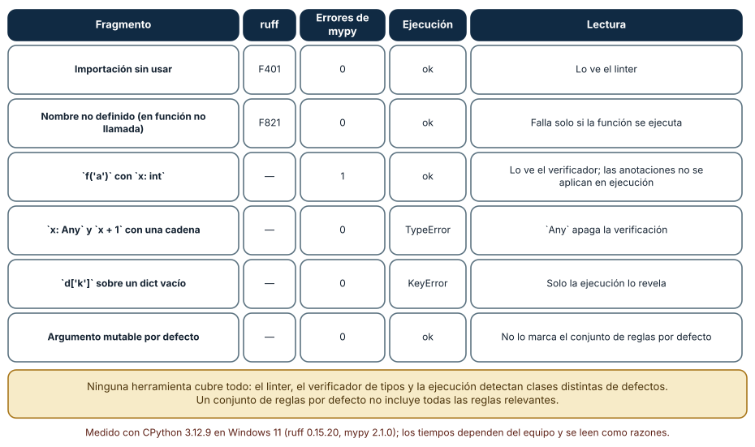
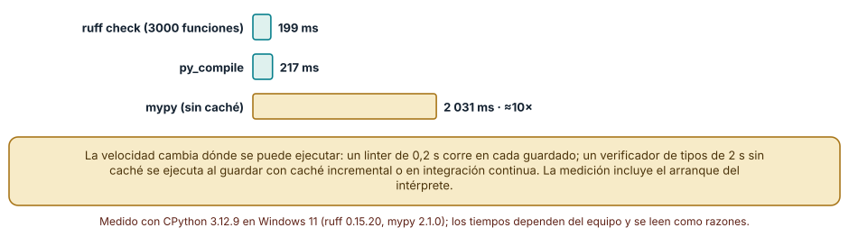
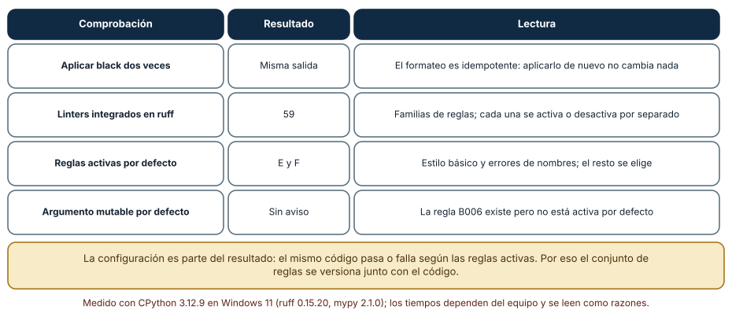

← SE-099 — Profilers de CPU, memoria, I/O y red · ↑ Parte 08 · 📚 Índice completo · 🌐 Portal · SE-101 — REPL, notebooks y desarrollo exploratorio →
Punto profesional y fundamento pedagógico
Punto profesional. La clase existe para separar compilación, formato, lint y análisis estático por la propiedad que verifican.
Por qué aparece aquí. Se sitúa después de Profilers de CPU, memoria, I/O y red y antes de REPL, notebooks y desarrollo exploratorio: convierte el conocimiento anterior en una decisión observable que la clase siguiente podrá reutilizar. La continuidad se comprueba en el artefacto, no por compartir vocabulario.
Error conceptual que debe corregir. Tratar cero advertencias como prueba de corrección.
Secuencia de aprendizaje. Antes de leer la solución, el estudiante predice el resultado del caso normal y del error conceptual anterior. Luego explica un caso resuelto paso a paso, construye un contraejemplo que cambie la decisión y, sin consultar el texto, reconstruye el mecanismo y lo aplica a una entrada nueva. La secuencia usa predicción, explicación propia, contraste y recuperación. ICAP distingue participación de construcción de conocimiento; How People Learn II exige conectar conocimiento previo, contexto y transferencia; la práctica de recuperación respalda producir de nuevo la explicación tras una demora; y Education for Life and Work exige devolución que explique la causa del error.
Evidencia de aprendizaje. Static-analysis.md con hallazgo real, falso positivo, configuración y límite. Debe contener predicción previa, observación, explicación causal, contraejemplo, criterio de aceptación y una nota de qué dato haría cambiar la conclusión.
Límite de la conclusión. El análisis estático aproxima comportamientos y no ejecuta todos los caminos.
Trazabilidad fuente → afirmación
| Fuente primaria u oficial | Afirmación que respalda | Lo que no prueba |
|---|---|---|
| Language Server Protocol 3.18 | Mensajes, capacidades y sincronización entre editor y servidor; autoridad: Microsoft | No demuestra por sí sola que el artefacto del estudiante sea correcto. |
| Python Debugging and Profiling | Pdb, cprofile, timeit, tracemalloc y límites instrumentales; autoridad: Python Software Foundation | No demuestra por sí sola que el artefacto del estudiante sea correcto. |
| Python ast | define el árbol sintáctico que un análisis puede inspeccionar | No demuestra por sí sola que el artefacto del estudiante sea correcto. |
| Ruff documentation | documenta alcance, reglas y configuración del linter | No demuestra por sí sola que el artefacto del estudiante sea correcto. |
Antes de empezar
Esta clase continúa el entorno reproducible de diagnóstico de la Parte 08. Recupera la evidencia de la clase anterior, añade una decisión propia de Compiladores, linters, formatters y análisis estático y deja un artefacto que la clase siguiente deberá consumir. La pregunta activa es: ¿Qué garantía aporta cada herramienta estática y qué no puede concluir sin ejecutar?
Prerrequisitos
- Haber completado la clase anterior o reconstruir su contrato y evidencia.
- Python 3.11 o posterior, terminal, editor y Git; un segundo runtime es opcional y debe declararse.
- Trabajar con fixtures sintéticos: ninguna observación necesita datos de una persona o sistema real.
Problema auténtico
El entorno reproducible de diagnóstico reúne mensajes de compilador, formatter, linter y type checker bajo errores. El equipo ignora todos porque algunos son estilo, perdiendo una incompatibilidad de tipo real.
Objetivos observables
Al terminar podrás explicar los cinco mecanismos de esta clase, predecir su comportamiento antes de ejecutar, construir un caso normal y uno límite, diagnosticar el fallo controlado, comparar una alternativa y entregar evidencia que otra persona pueda reproducir.
Mapa conceptual
Ver la notación fuente del diagrama
flowchart LR
N1[Compilación / front-end] --> N2[Formatter] --> N3[Linter] --> N4[Tipos / flujo] --> N5[Análisis estático / límites]
N5 -->|fallo o cambio| N1El mapa se lee como una cadena de razonamiento, no como fases obligatorias del runtime. La flecha de retorno indica que un fallo o cambio de requisito obliga a revisar el modelo inicial; no autoriza a parchear solo la última salida.
Temas y por qué importan
| Tema | Por qué cambia una decisión profesional | Evidencia mínima |
|---|---|---|
| Compilación y front-end | El compilador tokeniza, parsea, comprueba reglas y puede producir representación o ejecutable. | Predicción, traza causal y contraejemplo de Compilación y front-end en static-analysis.md |
| Formatter | Un formatter transforma presentación bajo reglas deterministas y reduce discusiones de estilo. | Predicción, traza causal y contraejemplo de Formatter en static-analysis.md |
| Linter | Un linter detecta patrones, APIs riesgosas o convenciones. | Predicción, traza causal y contraejemplo de Linter en static-analysis.md |
| Tipos y flujo | El análisis de tipos aproxima valores posibles sin ejecutar todas las rutas. | Predicción, traza causal y contraejemplo de Tipos y flujo en static-analysis.md |
| Análisis estático y límites | Análisis de datos, taint o control explora modelos conservadores. | Predicción, traza causal y contraejemplo de Análisis estático y límites en static-analysis.md |
Conceptos y decisiones
1. Compilación y front-end
El compilador tokeniza, parsea, comprueba reglas y puede producir representación o ejecutable. Un error sintáctico impide construir; que compile no demuestra contrato de negocio ni ausencia de comportamiento inseguro.
2. Formatter
Un formatter transforma presentación bajo reglas deterministas y reduce discusiones de estilo. No mejora nombres, cohesión ni corrección. Versionarlo evita diffs masivos por cambios de regla y permite reproducir formato en CI.
3. Linter
Un linter detecta patrones, APIs riesgosas o convenciones. Cada regla tiene intención, severidad y posibles falsos positivos. Desactivar globalmente por un caso local elimina señal; una supresión debe incluir razón y alcance mínimo.
4. Tipos y flujo
El análisis de tipos aproxima valores posibles sin ejecutar todas las rutas. Refinamiento de flujo puede reconocer chequeos, pero entrada externa sigue necesitando validación runtime. Any o casts silencian al analizador y trasladan la obligación al autor.
5. Análisis estático y límites
Análisis de datos, taint o control explora modelos conservadores. Puede reportar ruta imposible o no ver reflexión. La calidad depende de configuración, stubs y lenguaje; un reporte se triagea como hipótesis con evidencia.
Qué detecta cada herramienta y qué no
Seis fragmentos de código se analizaron con tres métodos: ruff check, mypy y la ejecución. Una importación sin usar la detecta ruff (F401) y la ejecución no falla. Un nombre no definido dentro de una función sin llamar la detecta ruff (F821), pero el programa se ejecuta sin error porque nadie llama a la función. Llamar f('a') con x: int lo detecta mypy (un error) y la ejecución *no* falla: las anotaciones no se aplican en tiempo de ejecución. Usar x: Any apaga la verificación: mypy no ve el error y la ejecución lanza TypeError. Un d['k'] sobre un diccionario vacío lo descubre solo la ejecución (KeyError). Y un argumento mutable por defecto no genera aviso con el conjunto de reglas por defecto.

Cómo leer la figura. Cada fila es un defecto distinto; cada columna, un método. Ninguna columna cubre todas las filas. Dónde deja de valer: el resultado depende de la configuración y las versiones usadas (ruff 0.15.20, mypy 2.1.0); con otras reglas activas, la columna de ruff cambiaría.
Velocidad y lugar de ejecución
Sobre un archivo de 3 000 funciones (6 000 líneas) ruff check tardó 199 ms, py_compile 217 ms y mypy sin caché 2 031 ms, unas diez veces más. La velocidad decide dónde se ejecuta cada herramienta: un linter de 0,2 s corre al guardar y en cada compromiso; un verificador de tipos de 2 s sin caché se ejecuta con caché incremental o en integración continua. Estos tiempos incluyen el arranque del intérprete (unos 127 ms en esta máquina), por lo que sobreestiman el costo del análisis puro en archivos pequeños.

Cómo leer la figura. La escala muestra que mypy cuesta un orden de magnitud más. Dónde deja de valer: con caché, mypy reanaliza solo lo que cambia y la brecha se reduce; con un proyecto con miles de módulos y dependencias, los tiempos se alejan de los de un archivo único.
Formato, reglas y configuración
black es idempotente: aplicarlo dos veces produjo la misma salida, una propiedad que permite usarlo en un gancho de confirmación sin generar cambios infinitos. ruff integra 59 familias de reglas, pero activa por defecto solo errores y estilo básico (E y F); la regla de argumentos mutables por defecto (B006) existe pero no está activa. La consecuencia es que *el mismo código pasa o falla según la configuración*, de modo que la configuración se versiona junto al código y se revisa como código. Un linter sin configuración fijada produce resultados que cambian al actualizar la herramienta.

Cómo leer la figura. Cada fila es una comprobación y su lectura operativa. Dónde deja de valer: el número de familias y las reglas por defecto cambian entre versiones; se leen en la documentación de la versión fijada.
Definiciones de trabajo
- compilación y front-end: el compilador tokeniza, parsea, comprueba reglas y puede producir representación o ejecutable.
- formatter: un formatter transforma presentación bajo reglas deterministas y reduce discusiones de estilo.
- linter: un linter detecta patrones, apis riesgosas o convenciones.
- tipos y flujo: el análisis de tipos aproxima valores posibles sin ejecutar todas las rutas.
- análisis estático y límites: análisis de datos, taint o control explora modelos conservadores.
Las definiciones son operativas para el entorno reproducible de diagnóstico. No convierten términos con historia más amplia en sinónimos y deben contrastarse con la documentación primaria enlazada al final.
Ejemplo mínimo
python -m compileall -q algorithm_library tests
python -m unittest -v
# Si el proyecto declara herramientas: ejecutar versiones fijadas de formatter, linter y type checker.Antes de ejecutar, predice estado, resultado y error. Después registra versión, comando y salida. Si el fragmento es pseudocódigo o pertenece a otro lenguaje, etiquétalo como tal y no afirmes que fue ejecutado.
Ejemplo profesional
En el entorno reproducible de diagnóstico, una investigación conserva síntoma, entorno, reproducción, hipótesis, observaciones, causa, corrección y regresión. La implementación de esta clase debe conservar ese contrato aunque cambie la forma interna. El caso profesional no pregunta únicamente si produce una salida: pregunta quién puede producirla, qué estado observa, cómo falla y qué rastro permite disputar una decisión incorrecta.
Compara el caso normal con autorización falsa, evidencia incompleta, empate y repetición. Un mecanismo es apropiado cuando esas diferencias quedan visibles y localizadas; es peligroso cuando dependen de orden accidental, estado oculto o una convención que el consumidor no puede conocer.
Práctica guiada
- Copia el contrato de entrada y salida antes de escribir implementación.
- Predice el caso normal y un límite; identifica la invariante que no puede romperse.
- Implementa la versión mínima sin I/O dentro del núcleo.
- Ejecuta el caso y conserva comando, versión y salida bajo
evidence/. - Introduce el fallo controlado, reduce la reproducción y formula dos hipótesis rivales.
- Corrige la causa, añade regresión y ejecuta el conjunto completo.
- Compara con otro paradigma o lenguaje indicando qué semántica se preserva.
Ejercicios
- Clasificación: asigna cada defecto de la Figura 1 a la herramienta que lo detecta y a la que no.
- Velocidad: decide en qué punto del flujo (al guardar, al confirmar, en CI) ejecutarías ruff y mypy según sus tiempos y justifica.
- Idempotencia: comprueba que tu formateador es idempotente aplicándolo dos veces a un archivo.
- Configuración: escribe las reglas que activarías además de las de por defecto y una razón por cada una.
Reto verificable
Entrega implementación, fixtures, pruebas y un informe corto. Se aprueba si otra persona ejecuta desde checkout limpio, obtiene los mismos resultados y puede relacionar cada rama o transformación con una regla del dominio. No se aprueba por cantidad de archivos ni por usar la sintaxis característica del paradigma.
Caso conductor
El entorno reproducible de diagnóstico parte de una inversión de empates en la biblioteca de estructuras y algoritmos, captura versión y entrada mínima, compara un entorno sano con uno afectado y conserva la primera divergencia observable. Cambia después una sola regla o condición y revisa qué archivos, pruebas y trazas debieron modificarse. Esa superficie de cambio alimenta el proyecto final de la parte.
Preguntas frecuentes
¿Es lo mismo un linter que un verificador de tipos?
No. El linter aplica reglas sobre la forma del código (importaciones sin usar, nombres no definidos); el verificador de tipos razona sobre los tipos declarados y detecta usos incompatibles. Cubren defectos distintos y se complementan.
¿Los tipos se comprueban al ejecutar?
En Python no: las anotaciones son información para herramientas. El código con un tipo incorrecto se ejecuta hasta que una operación concreta falla.
¿Qué hago con un falso positivo?
Se documenta el motivo y se desactiva la regla en la línea mínima necesaria, con un comentario que lo justifique. Desactivarla en todo el proyecto oculta defectos reales.
¿Por qué no activar todas las reglas?
Porque algunas se contradicen y otras generan ruido que hace que se ignore todo. Se elige un conjunto con una razón por regla y se amplía por decisión.
Fallo controlado y diagnóstico
Añade # type: ignore a un acceso opcional y provoca None en runtime. Reemplaza la supresión por validación/refinamiento y prueba el caso ausente.
Registra síntoma, entrada mínima, hipótesis, observación que descarta cada hipótesis, causa, corrección y prueba de regresión. No cambies simultáneamente implementación, fixture y expectativa.
Comprueba el límite de cada herramienta con un defecto que ninguna ve. Escribe una función que acceda a una clave de un diccionario construido dinámicamente y ejecútala solo con una entrada que la contiene. Síntoma: ruff y mypy pasan limpios y la prueba también. Hipótesis: el defecto depende de datos que no se ejercitaron. Prueba: llama a la función con una entrada sin la clave. Conclusión: ninguna herramienta estática puede reemplazar una prueba con la entrada que expone el defecto. Registra en checks.md qué herramienta habría detectado el defecto y cuál no, y añade el caso como prueba.
Errores comunes y cómo corregirlos
| Síntoma | Causa | Corrección |
|---|---|---|
| El código pasa mypy y falla al ejecutar | Any o falta de anotaciones | Reducir Any en las fronteras y probar con datos reales |
| El linter pasa pero hay un defecto conocido | La regla no está activa | Revisar el conjunto de reglas y activar la relevante |
| El resultado cambia al actualizar la herramienta | Versión o reglas por defecto cambiaron | Fijar versión y configuración |
| Se desactiva una regla en todo el proyecto | Falso positivo local | Desactivar solo en la línea y justificar |
| El verificador es tan lento que se omite | Se ejecuta sin caché | Usar caché incremental o ejecutarlo en CI |
Entorno y archivos clave
work/SE-100/
├── README.md
├── diagnostic_environment/
│ ├── domain.py
│ └── se_100.py
├── fixtures/cases.json
├── tests/test_se_100.py
└── evidence/diagnosis.mdEl README declara plataforma, runtimes, comandos, limpieza y límites. Evita dependencias externas cuando la biblioteca estándar permita observar el mecanismo; si agregas una, fija procedencia y versión.
Seguridad, ética y accesibilidad
- la autorización forma parte del dominio y no se infiere por ausencia de rechazo;
- no uses
eval, reglas descargadas ni serialización insegura; - limita colas, recursión, tamaño de entrada y tiempo de evaluación;
- redacta trazas y conserva una explicación textual además de color o animación;
- una recomendación automatizada debe poder revisarse, impugnarse y corregirse;
- respeta licencias de ejemplos y atribuye adaptaciones.
Puente hacia el trabajo con agentes
El análisis estático es la primera barrera barata contra el código que genera un agente: ruff en 0,2 s lo vuelve viable como paso obligatorio tras cada edición. Pero la matriz de la Figura 1 se aplica igual: un agente puede producir código que pasa linter y tipos y falla al ejecutar, de modo que el harness combina las tres capas (reglas, tipos, pruebas) y registra cuál detectó cada defecto. Que el agente edite la configuración del linter para silenciar un aviso es un patrón de riesgo que se revisa.
Transferencia
Traslada un fixture al segundo modelo, herramienta, plataforma o lenguaje. Compara representación de ausencia, error, mutabilidad, orden y cancelación. La transferencia está lograda cuando el contrato se conserva y las diferencias están explicadas, no cuando la interfaz se parece.
Evaluación y evidencia
| Criterio | Evidencia para aprobar |
|---|---|
| comprensión | explicación causal de los cinco mecanismos |
| corrección | normal, límite, inválido y contraejemplo |
| diseño | estado, efectos y contrato localizables |
| diagnóstico | reproducción mínima y regresión |
| transferencia | comparación semántica, no estética |
| reproducibilidad | versiones, comandos, salida y límites |
Fuentes
- Language Server Protocol 3.18 — Mensajes, capacidades y sincronización entre editor y servidor; autoridad: Microsoft.
- Debug Adapter Protocol — Breakpoints, frames, variables y negociación de capacidades; autoridad: Microsoft.
- Python Debugging and Profiling — Pdb, cprofile, timeit, tracemalloc y límites instrumentales; autoridad: Python Software Foundation.
- Python venv — Aislamiento de intérprete, scripts y entorno virtual; autoridad: Python Software Foundation.
- Development Container Specification — Configuración reproducible de herramientas y ciclo de vida del contenedor; autoridad: Dev Container Specification maintainers.
- Web Content Accessibility Guidelines 2.2 — Percepción, operación por teclado y reducción de barreras en interfaces; autoridad: W3C.
Cada fuente respalda el mecanismo indicado; ninguna demuestra que la implementación del entorno reproducible de diagnóstico sea correcta. Esa afirmación depende de fixtures, pruebas, trazas y revisión reproducible.
- Ruff: reglas y configuración: catálogo de reglas y cuáles están activas por defecto.
- mypy: documentación: funcionamiento del verificador de tipos y el papel de
Any. - Black: estilo y estabilidad del formato: garantías de idempotencia del formateador.
Límites y siguiente paso
La señal estática no sustituye experimentación y puede ser ruidosa durante exploración. La siguiente clase diseña REPL y notebooks con una ruta explícita hacia artefactos reproducibles.
Glosario
- compilación y front-end: el compilador tokeniza, parsea, comprueba reglas y puede producir representación o ejecutable.
- formatter: un formatter transforma presentación bajo reglas deterministas y reduce discusiones de estilo.
- linter: un linter detecta patrones, apis riesgosas o convenciones.
- tipos y flujo: el análisis de tipos aproxima valores posibles sin ejecutar todas las rutas.
- análisis estático y límites: análisis de datos, taint o control explora modelos conservadores.
← SE-099 — Profilers de CPU, memoria, I/O y red · ↑ Parte 08 · 📚 Índice completo · 🌐 Portal · SE-101 — REPL, notebooks y desarrollo exploratorio →